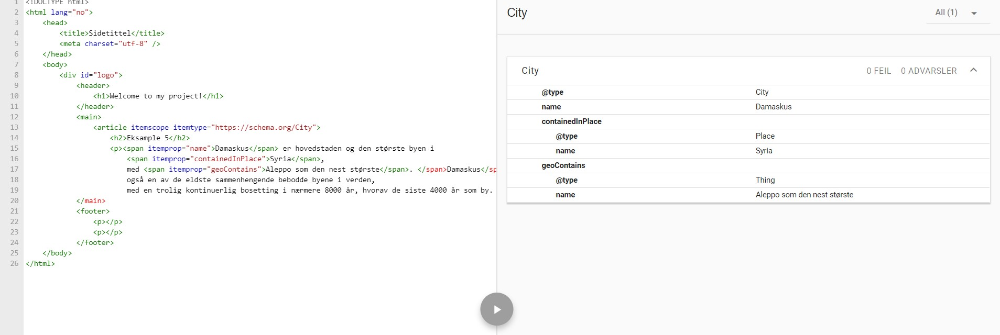

Eksample 5
Damaskus er hovedstaden og den største byen i Syria, med Aleppo som den nest største. Damaskus er også en av de eldste sammenhengende bebodde byene i verden, med en trolig kontinuerlig bosetting i nærmere 8000 år, hvorav de siste 4000 år som by.
